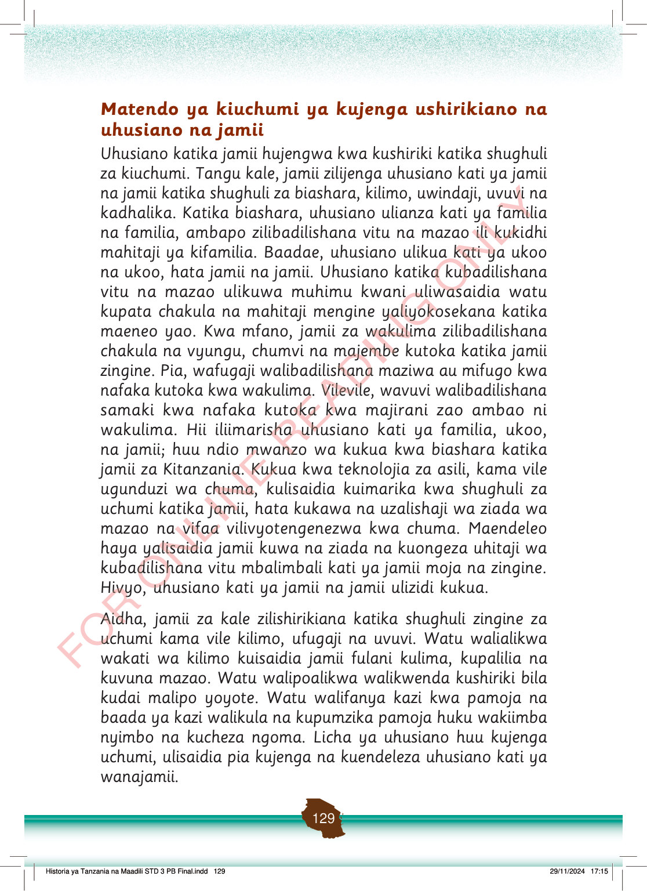

Matendo ya kiuchumi ya kujenga ushirikiano na uhusiano na jamii
Uhusiano katika jamii hujengwa kwa kushiriki katika shughuli za kiuchumi.
Tangu kale, jamii zilijenga uhusiano kati ya jamii na jamii katika shughuli za biashara, kilimo, uwindaji, uvuvi na kadhalika.
Katika biashara, uhusiano ulianza kati ya familia na familia, ambapo zilibadilishana vitu na mazao ili kukidhi mahitaji ya kifamilia.
Baadae, uhusiano ulikua kati ya ukoo na ukoo, hata jamii na jamii.
Uhusiano katika kubadilishana vitu na mazao ulikuwa muhimu kwani uliwasaidia watu kupata chakula na mahitaji mengine yaliyokosekana katika maeneo yao.
Kwa mfano, jamii za wakulima zilibadilishana chakula na vyungu, chumvi na majembe kutoka katika jamii zingine.
Pia, wafugaji walibadilishana maziwa au mifugo kwa nafaka kutoka kwa wakulima.
Vilevile, wavuvi walibadilishana samaki kwa nafaka kutoka kwa majirani zao ambao ni wakulima.
Hii iliimarisha uhusiano kati ya familia, ukoo, na jamii; huu ndio mwanzo wa kukua kwa biashara katika jamii za Kitanzania.
Kukua kwa teknolojia za asili, kama vile ugunduzi wa chuma, kulisaidia kuimarika kwa shughuli za uchumi katika jamii, hata kukawa na uzalishaji wa ziada wa mazao na vifaa vilivyotengenezwa kwa chuma.
Maendeleo haya yalisaidia jamii kuwa na ziada na kuongeza uhitaji wa kubadilishana vitu mbalimbali kati ya jamii moja na zingine.
Hivyo, uhusiano kati ya jamii na jamii ulizidi kukua.
Aidha, jamii za kale zilishirikiana katika shughuli zingine za uchumi kama vile kilimo, ufugaji na uvuvi.
Watu walialikwa wakati wa kilimo kuisaidia jamii fulani kulima, kupalilia na kuvuna mazao.
Watu walipoalikwa walikwenda kushiriki bila kudai malipo yoyote.
Watu walifanya kazi kwa pamoja na baada ya kazi walikula na kupumzika pamoja huku wakiimba nyimbo na kucheza ngoma.
Licha ya uhusiano huu kujenga uchumi, ulisaidia pia kujenga na kuendeleza uhusiano kati ya wanajamii.